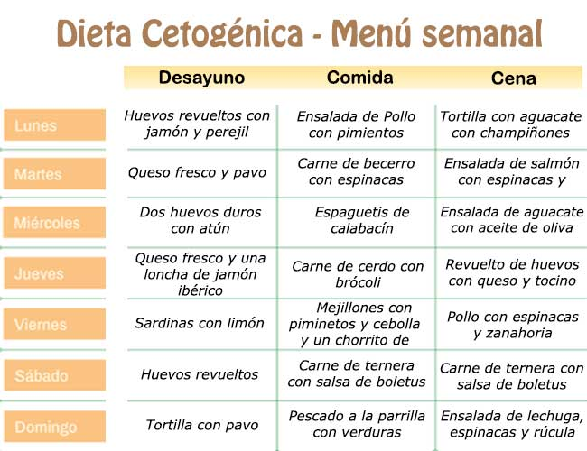
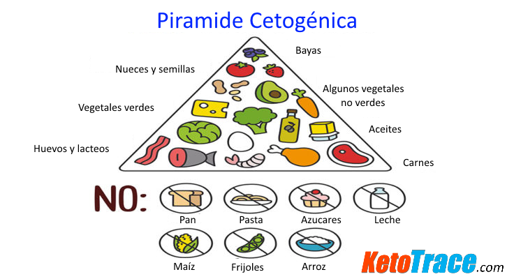

Comer menos azúcar y harinas, ¿la solución definitiva al sobrepeso/obesidad?(II)
Continuamos de http://www.burbuja.info/inmobiliaria/consumo-responsable/689844-comer-menos-azucar-y-harinas-solucion-definitiva-al-sobrepeso-obesidad.html
Buenos días, (aviso: LADRILLO INFUMABLE) ::
Lo pongo en este subforo aunque realmente no sea de consumo responsable, pero he visto varios temas que tratan este asunto, aunque sea tangencialmente, y he leído varias opiniones que me han parecido muy interesantes.
Lo primero, decir que no pretendo ni hacer proselitismo de uno u otro tipo de dieta, y que lo que busco es gente que haya 'notado' lo mismo que yo, para ver si lo mío es una excepción o algo más o menos común, por supuesto, sin que esto demuestre o deje de demostrar nada.
Os pongo en materia: desde pequeño, he tenido una tendencia a un ligero sobrepeso (ligero, en plan 4-5 kilos de más, es decir, simplemente no tener músculos marcados y sí algún michelín), y aunque nunca he sido un gran deportista, desde la adolescencia y salvo etapas concretas siempre me he mantenido activo (es decir, unas 2-3 horas de ejercicio a la semana, correr, algún partido de fútbol, algo de bici, etc.).
Sin embargo entre los 24 y los 27 años, debido a un trabajo horrible que me hizo totalmente sedentario y con bastante ansiedad, engordé unos 10 kg, por lo que me pasaba de 'mi peso' unos 15-16 kg.
Al dejar ese trabajo, y simplemente con el cambio de hábitos (menos estrés, algo de deporte y comer mejor) en un año adelgacé unos 8 kg sin hacer nada, simplemente por el cambio de hábitos.Sin embargo me empecé a interesar un poco en el tema de la nutrición, y llegué, tras mucho leer e investigar, a varias conclusiones:
-Las recomendaciones dietéticas 'oficiales' que recomiendan en general los Gobiernos (y, en general, la mayoría de médicos) no tienen un sustento científico sólido (restringir grasas, basar alimentación en pan, pasta, patatas).
-Los tratamientos que se proponen para la obesidad/sobrepeso son tremendamente ineficaces (no entro en el por qué, sólo lo constato).La gente que conozco gorda, NO ADELGAZA JAMÁS, salvo que tengan una epifanía/cambio de vida/revelación mística.JAMÁS.
-Lo que la población en general cree saber de nutrición, son una serie de simplificaciones que dan casi vergüenza, en plan 'si comes algo en el desayuno lo quemas y si comes 2000 kcal y gastas 2100 adelgazas' (cosas sin sentido o perogrulladas inútiles: es evidente que el cuerpo no puede violar las leyes de la termodinámica, pero no explica NADA), ignorando el complejo funcionamiento del cuerpo humano, la actividad física, los diferentes nutrientes, las hormonas, el sueño, el ejercicio, etc.
-Cuando se dice que la población es hoy en día mucho más sedentaria que nuestros padres/abuelos, creo que hay una trampa en este argumento.Cierto perfil de gente, 'el típico informático panzudo que come doritos', es cierto que no se mueve NADA, y probablemente sea el suyo un nivel de sedentarismo nunca visto en la Historia.Pero hoy en día, la población 'media' yo creo que hace más deporte que nuestros padres/abuelos (mi abuelo piensa que correr si no te persigue un animal es de locos, que levantar pesas te hace daño, y durante toda su vida su ejercicio fue 'pasear' e ir al bar o a bailar un pasodoble.Nunca estuvo gordo, comía, fumaba y bebía lo que le salía de los cojones, y comía tocino y cosas bien contundentes :: ).Así que cuidado con las afirmaciones de que hoy hay mucho más sedentarismo.
-Una serie de cuestiones parece indicar que los responsables de la epidemia de obesidad son: los azúcares y las harinas refinadas (pan y pasta), ya que según aumenta históricamente su consumo, aumentan las tasas a saco.::
Bien, dicho esto, paso a relatar mi experiencia PERSONAL:
Hace cosa de un año y medio (tengo 30 años), pesaba unos 78 kg (mido 1,70).Decidí ponerme en forma y 'experimentar' con mis hábitos alimenticios y de deporte.Lo que hice fue:
-Dejar de tomar azúcar en el café/té (nunca he comido dulces, salvo cumpleaños, etc.).En la práctica, tomo casi nada de azúcar o edulcorantes.
-Restringir el consumo de pan (casi nada a la semana) y de lo que sean harinas, galletas, cereales para el desayuno, bizcochos, pizza, etc.En realidad, salvo algo de pan de vez en cuando (una o dos veces a la semana), no como casi nada de estos alimentos.
-Salir a correr tres veces a la semana, por la mañana antes de ir al trabajo, haciendo rutinas HIIT (básicamente, hacer series de sprints) y hacer dominadas y flexiones.Unos 30 minutos de deporte cada vez.
El cambio fue brutal.Me encontré 'raro' un par de semanas, y al principio salir a correr en ayunas me parecía incluso 'peligroso' (marearme o algo así).El primer mes perdí unos 5 kg, y seguí perdiendo más despacio, ahora peso 69-70 kg, pero he ganado músculo en piernas, brazos y espalda.Se me marcan los músculos de los abdominales (no hago abdominales), me siento lleno de energía y de fuerza.Duermo mejor y más, voy al baño mejor, he dejado de fumar tabaco (un año ya!), vamos, la auténtica salud.
Lo curioso es que como todo lo que quiero, salvo lo antes descrito, en general como básicamente carne/pescado, ensaladas, frutos secos, frutas y verduras de todo tipo y nunca me quedo con hambre.Como cosas en teoría con muchas calorías a diario (aceite de oliva, aguacate, frutos secos, salsas grasas, pescado azul, carne) y no engordo, al revés adelgazo.Nunca tengo hambre ni ansiedad por la comida, y hago más deporte porque tengo más ganas de moverme (creo).Estoy en plena forma.
Todo ello básicamente dejando azúcar/harinas, y sin ser talibán: comidas familiares, o los fines de semana, en un bar/restaurante como LO QUE SEA, (como mucho no como pan), pero como pizza, hamburguesas, empanada, o lo que sea.
¿Alguien le ha pasado algo parecido?
Perdón por el tocho, y un saludo!::::::
EDITO CASI 5 MESES DESPUÉS DE ABRIR EL HILO: Lo primero de todo agradecer a los participantes en el hilo sus aportaciones, en especial a Rauxa y a Karlos Smith (aunque mucha otra gente ha aportado cosas muy útiles).
En mi caso, sigo manteniendo el peso, y en los últimos dos o tres meses ganando masa muscular (recomiendo encarecidamente la calistenia).
Mi experiencia
me ha proporcionado las siguientes conclusiones 'Provisionales' (no tengo pruebas científicas de nada de esto):
-Que aumentando grasas saludables, y especialmente frutos secos, con aportes de hidratos de carbono por debajo de 100 gr.diarios (y sólo en forma de frutas, verduras y hortalizas), es decir, cerca de lo que sería una dieta cetogénica aunque no estricta, la bajada de peso es extremadamente rápida y eficaz.El ayuno intermitente con este tipo de alimentación, en mi caso al menos, ELIMINA la sensación de hambre hasta límites que me han llegado a preocupar.
-Que introducir más hidratos, de nuevo en forma de patatas, calabaza, frutas, etc.(no harinas ni azúcares), hace que el peso se estabilice, y se detiene el adelgazamiento.
-Que el hecho de consumir uno o dos días a la semana (viernes y sábado) alimentos como pizza, pan, bocadillos, alcohol, etc., no parece tener ninguna consecuencia sobre todo lo anterior, o el efecto es tan pequeño que no he podido medirlo.
-Que a partir de tres o cuatro días sin comer harinas/azúcares, hay un par de días en los que se mea mucho (y a veces hasta se suda mucho), en este caso es como si el volumen del cuerpo se redujera mucho (por ejemplo, se nota en los agujeros del cinturón) aunque el peso no baje demasiado.Incluso se marcan más los músculos del cuerpo.Supongo que esto debe tener algo que ver con la retención de líquidos y la inflamación.
-Que duermo mejor, me encuentro mejor y con más energía y optimismo (esto es muy subjetivo, claro).
En resumen: creo de verdad que el enfoque que la mayoría de endocrinos y nutricionistas dan al tema del sobrepeso y la obesidad está totalmente equivocado.La teoría del balance energético, es como poco, ineficiente a la hora de perder peso, y probablemente esté equivocada de base.
Lo único, aclarar que este tipo de alimentación, la recomiendo PARA PERDER PESO Y MANTENER EL PESO PERDIDO.No tengo evidencias de que sea BUENA PARA LA SALUD.Aunque entiendo que el hecho de comer alimentos sin procesar (frutas, verduras frescas, carne, pescado, frutos secos) difícilmente puede ser dañino para la salud, EVIDENTEMENTE NO CONOZCO LAS CONSECUENCIAS PARA LA SALUD DE ELIMINAR EL PAN DE LA DIETA.Tal vez nos muramos antes, no lo sé.Pero yo, al menos, delgado, musculoso y feliz.
Un saludo a todos y muchas gracias!!!
Posted On: 2017-10-10T00:00:00
Posted By: calopez
Deus ex Machina nos regala un hilo nuevo y una chincheta de propina.
Alabado sea, loor y gloria.
EDIT: Y pole en jilo mítico (la primera vez que me rebajo a estas tontunas) ::
REQUETEDIT: aprovecho la pole para colgar, a modo de resumen, el enlace al blog del Dr. Fung.
Blog - Intensive Dietary Management (IDM)
Muy reveladoras sus series de posts sobre calorías, teoría hormonal de la obesidad , ayuno, diabetes tipo 2, y recientemente, cáncer
Posted On: 2017-10-10T00:00:00
Posted By: Smiling Jack
Hilo ya más histórico que mítico.
Por aquí seguiremos.
Gracias, Adrenocromo.
Posted On: 2017-10-10T00:00:00
Posted By: Clavisto
Alabado seas.
Posted On: 2017-10-10T00:00:00
Posted By: Cazarr
Calopez ya ha perdido 20 kilos comiendo solo grasas animales.
A las bodas se lleva su tupper de cabeza de caballo.
Posted On: 2017-10-10T00:00:00
Posted By: esbjerg
Muy buena decisión.Hilo histórico y mítico, realidad social y médica que no se puede aplazar más tiempo!
Posted On: 2017-10-10T00:00:00
Posted By: Malditos Bastardos
que bien hilo nuevo!!!mola.hoya traje de comer (riquisima, solo con queso y lino) 5-Ingredient Keto Ham Cheese Pockets | The KetoDiet Blog de relleno atún, huevo cocido y salsa de tomate casera
---------- Post added 10-oct-2017 at 11:28 ----------
Keto Diet: Hot Breakfast Pockets 2 Ways - YouTube
Posted On: 2017-10-10T00:00:00
Posted By: sada
Era hora.Gracias a Adreno por crearlo y a todos los que habéis participado de una u otra manera en él.
Posted On: 2017-10-10T00:00:00
Posted By: Raullucu
Entradas sobre alimentación low carb, colesterol, grasa, azúcar, obesidad, diabetes, entrenamiento
ENTRADAS SOBRE ALIMENTACIÓN LOW CARB, COLESTEROL, GRASA, AZÚCAR, OBESIDAD, DIABETES, ENTRENAMIENTO.
Entradas increíblemente buenas del blog del Doctor Jorge García-Dihinx La Meteo que viene
Hay buena información complementária también en la sección de comentarios, donde completa la información respondiendo a usuarios del blog
IMPRESCINDIBLE
• PARA ADELGAZAR QUÉ ES MEJOR?DIETA O EJERCICIO?La Meteo que viene: PARA ADELGAZAR QUÉ ES MEJOR?DIETA O EJERCICIO?
• SI LOS CARBOHIDRATOS ENGORDAN PORQUE EL ASIÁTICO COMIENDO ARROZ NO ENGORDABA?La Meteo que viene: SI LOS CARBOHIDRATOS ENGORDAN..POR QUÉ EL ASIÁTICO COMIENDO ARROZ NO ENGORDABA?PARTE 1
• LOS HUEVOS, UNO DE LOS ALIMENTOS MÁS NUTRITIVOS La Meteo que viene: LOS HUEVOS, UNO DE LOS ALIMENTOS MÁS NUTRITIVOS QUE EXISTEN
• MANEJANDO MEJOR LA DIABETES CON LOW CARB La Meteo que viene: MANEJANDO MEJOR LA DIABETES CON UNA ALIMENTACIÓN BAJA EN CARBOHIDRATOS
• MI ANALÍTICA PERSONAL: Colesterol 248, HDL 117, Triglicéridos 60 https://lameteoqueviene.blogspot.com.es/2017/01/mi-analitica-personal-colesterol-total.html
• CARGADOS DE CARBOHIDRATOS (La Película) Una cultura muriéndose por comer http://lameteoqueviene.blogspot.com.es/2017/02/sobrecargados-de-carbohidratos-una.html
• PARA QUEMAR GRASAS... INGIERE GRASAS EN LUGAR DE CARBOHIDRATOS http://lameteoqueviene.blogspot.com.es/2016/08/para-quemar-grasas-ingiere-grasas-en.html
• RECOMENDACIONES ALIMENTACIÓN INFANTIL DE 0 A 2 AÑOS http://lameteoqueviene.blogspot.com.es/2015/09/recomendaciones-de-alimentacion.html
• ¿COLESTEROL LDL = RIESGO CARDIOVASCULAR?MEJOR MEJORA TU DIETA (menos azúcares) Y TU EJERCICIO (más intenso y breve) http://lameteoqueviene.blogspot.com.es/2016/10/colesterol-ldl-riesgo-cardiovascular_25.html
• LA CONEXIÓN AZÚCAR - INSULINA - GRASA CORPORAL, Dr. Bernstein (Diabetes Solution Book) http://lameteoqueviene.blogspot.com.es/2016/09/la-conexion-azucar-insulina-grasa.html
• LA FISIOLOGÍA DEL ENTRENAMIENTO INTERVÁLICO (HIIT) http://lameteoqueviene.blogspot.com.es/2016/10/la-fisiologia-del-entrenamiento_28.html
• LOS BENEFICIOS PARA LA SALUD DEL ENTRENAMIENTO DE ALTA INTENSIDAD CON PESAS http://lameteoqueviene.blogspot.com.es/2016/12/los-beneficios-para-la-salud-del.html
• ENTRENAMIENTO DE PESAS (HIST) PARA ANCIANOS, http://lameteoqueviene.blogspot.com.es/2017/01/entrenamiento-de-pesas-hist-para.html
• LA GRAN MENTIRA DEL COLESTEROL Y EL NEGOCIO DE LAS ESTATINAS http://lameteoqueviene.blogspot.com.es/2016/08/la-gran-mentira-del-colesterol-y-el.html
• EL MITO DE LA ALIMENTACIÓN 'LIGHT' (Baja en grasa) http://lameteoqueviene.blogspot.com.es/2016/07/el-mito-de-la-alimentacion-light-baja.html
• LA VERDAD SOBRE LAS ESTATINAS http://lameteoqueviene.blogspot.com.es/2016/06/la-verdad-sobre-las-estatinas-y-el-mito.html
• LOS REFRESCOS SON LOS PRINCIPALES RESPONSABLES DE LA OBESIDAD http://lameteoqueviene.blogspot.com.es/2015/10/los-refrescos-de-cola-y-otros-son-los.html
• LA GRASA SATURADA NO OBSTRUYE LAS ARTERIAS https://lameteoqueviene.blogspot.com.es/2017/05/la-grasa-saturada-no-obstruye-las.html
• LA COMIDA MODERNA NOS TRAJO LAS ENFERMEDADES MODERNAS.PARTE 2: EL PAPEL DE LA INSULINA CRÓNICAMENTE ELEVADA http://lameteoqueviene.blogspot.com.es/2017/07/la-comida-moderna-nos-trajo-las.html?m=1
• LOS PELIGROS DEL AZÚCAR AÑADIDO.POR ESO EL ASIÁTICO NO ENGORDABA COMIENDO ARROZ (PARTE 2).EL HIGADO GRASO Y LA INSULINO RESISTENCIA GENERADOS POR EL AZÚCAR... http://lameteoqueviene.blogspot.com.es/2017/08/los-peligros-del-azucar-anadido-por-eso.html
• ¿DEBEMOS REDUCIR LA SAL PARA PREVENIR LA HIPERTENSIÓN Y LOS INFARTOS?AL CONTRARIO, QUIZÁS DEBAMOS INCREMENTARLA
PARTE 1: Los sesgos de los estudios científicos sobre la sal y su injusta demonización
http://lameteoqueviene.blogspot.com.es/2017/09/debemos-reducir-la-sal-para-prevenir-la.html
---------- Post added 10-oct-2017 at 19:36 ----------
Ideas de menús


Y SOBRE TODO, COME COMIDA REAL, Y NO MIERDA PROCESADA
La comida real, a diferencia de la comida procesada, proporciona los niveles de nutrientes necesarios para tener una buena salud, más allá del simple sobrepeso/ obesidad.
La comida procesada es muy alta en azucar, y muy baja en minerales y vitaminas, es muy pobre nutricionalmente.
Incluso la comida real, por los medios de producción moderna tanto agrícola como ganadera, ha empobrecido la calidad del suelo y por tanto los nutrientes que hace unas decadas tenían los alimentos.
Por eso hoy en día es tan importante consumir comida real, y si nuestra economía nos lo permite, consumir alimentos de mayor calidad como cultivos orgánicos y animales alimentados con pastura... igualmente si nuestra economía no nos lo permite, siempre será preferente consumir comida real producida de manera cuestionable (verduras fertilizadas, huevos de gallinas alimentadas con grano y enjauladas...)
Añadido 07/01/2019
Última edición: 7 Ene 2019
Posted On: 2017-10-10T00:00:00
Posted By: Ultra Chad
Por fin chincheta!!!Me había asustado al no verlo..... A por otras 1000 páginas
Posted On: 2017-10-10T00:00:00
Posted By: bizarre
Por fin chincheta, más que merecida.Gracias de nuevo Adrenocromo.
Posted On: 2017-10-10T00:00:00
Posted By: juanforapor
chincheta aleluya
Posted On: 2017-10-11T00:00:00
Posted By: sada
Ya solo falta que nos pasen al principal ... Al tiempo.
Posted On: 2017-10-11T00:00:00
Posted By: bambum
bambum dijo: Ya solo falta que nos pasen al principal ... Al tiempo.
Más valdría, puestos a pedir, que el Lidl nos organizara un subforo dedicado a salud, que aquí en consumo responsable tampoco sé bien qué pintamos.
Como no sea por lo de
salud y pesetas ...
Posted On: 2017-10-11T00:00:00
Posted By: Smiling Jack
Smiling Jack dijo: Más valdría, puestos a pedir, que el Lidl nos organizara un subforo dedicado a salud, que aquí en consumo responsable tampoco sé bien qué pintamos.Como no sea por lo de
salud y pesetas ...
Había un dicho que decía algo así como: Lo que no te gastes en tu frutero te lo gastarás en tu médico...
Así que puede ser consumo responsable
Posted On: 2017-10-11T00:00:00
Posted By: killersanchez
Content Date: 2017-10-10
Download Date: 2021-09-09
Document ID: L0C04G2KI